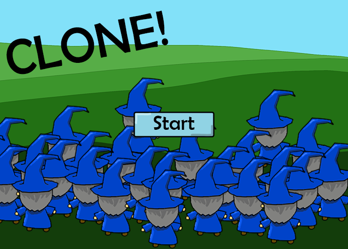
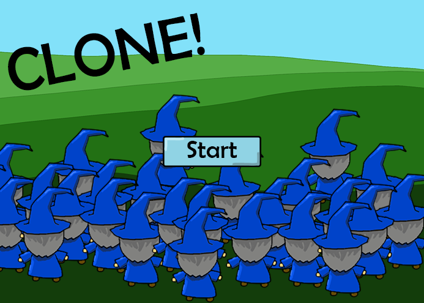

In Clone!, the player plays as a wizard who must use their cloning powers to defeat Shroggs and solve puzzles.
Clone will be primarily a desktop web app.
Your homeland has been invaded by the Shroggs, and you must fight to take it back.
I'm aiming for a cartoonish style with saturated colors. See mock ups.
The player can move around with WASD/Arrows/Mouse. They can press space to make a clone, which the player then possesses. The player/clones will automatically attack Shroggs, but the Shrogg will win if they see each other at the same time. Hence, the player must manipulate clones and the Shroggs' blindspots in order to defeat them, but without using too much mana!
 

I'm Henry Orsagh, a 2nd year Game Design and Development major. I have experience with C#, C++, Javascript, Python, and Java. I'm also proficient with Unity and Unreal. I enjoy snowboarding and worldbuilding when I'm not playing or making games.